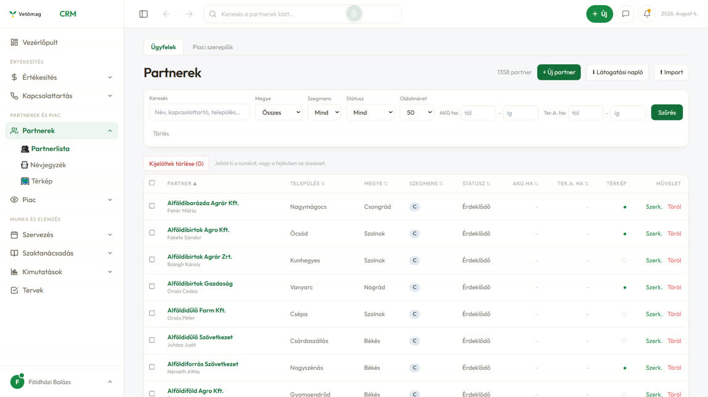
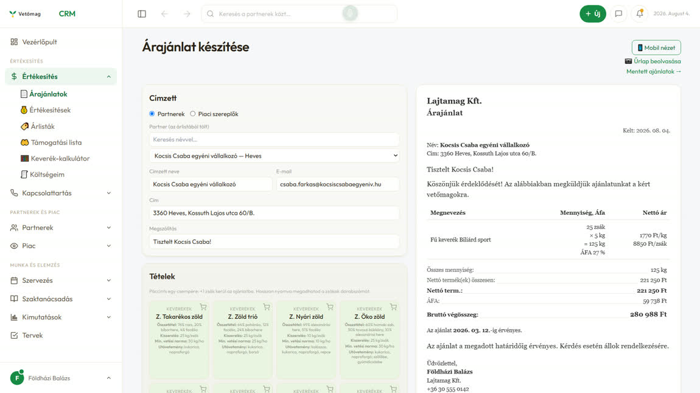
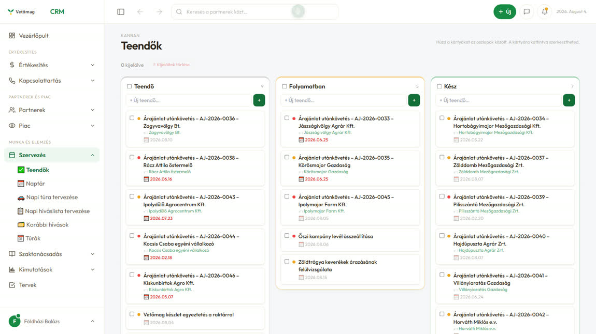
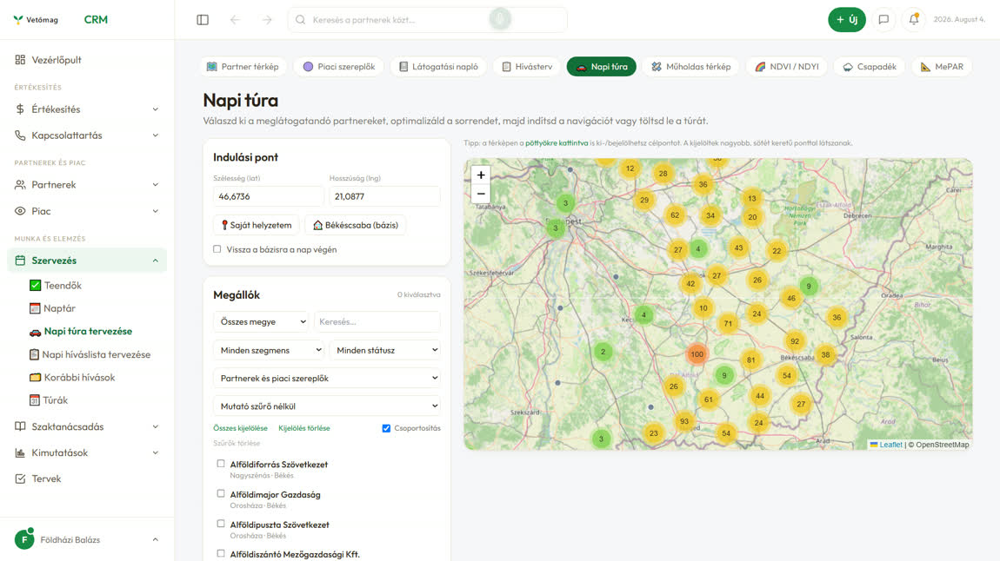

Hogyan lesz a mai szétszórt cetlikből egy közös adattár, amibe a cég minden vezetője beszél — és ami minden mondattól okosabb lesz. Képekben.
Egy ügyvezetői hét néhány cetlije. Füzetben, üzenetben, fejben — hét különböző helyen. Kattints végig a három állapoton.
Az akkreditált labor hatósági jogkörrel dolgozik. Egy elcsúszott audit-határidő nem kellemetlenség — a jogkört teszi kockára.
Mennyi volt az ár? Mit rendelt tavaly? Ha a válasz egy füzetben van, újra meg kell kérdezni — a partnert vagy a kollégát.
400+ szerződéses termelő, három telephely, három futó nemesítési program. Ennyit senki nem tart fejben — mégis ott van.
A Vetőmag CRM az értékesítést rendbe tette: partner, ajánlat, hívás, teendő, túra — mind a helyén, kereshetően. Nem makett, ez fut ma.




A rend csak annyit ér, amennyit beírnak. Az ügyvezető nem gépel — és a cetlik másik felének, a labornak, az üzemnek, a nemesítésnek ma nincs is rekesze.
Nincs űrlap. Egy mondatból több rekesz töltődik — és a rekeszek maguk is a használatból nőnek.
„Beszéltem Kovács Bélával, húsz hektár facéliát kér szeptember végére, küldjük ki neki az árat. A püski szárító jövő héten két napot áll. És szóljatok: a NÉBIH-audit márciusban lesz."
Mit figyeltünk meg a fajtafenntartásnál, melyik parcellán, milyen időjárásban.
Ki szaporította, mekkora területen, és ki mondta le.
Milyen csírázással és tisztasággal jöttek be a tételek.
Kinek adtuk el, mennyiért, és ki kérdezett rá újra.
A nagy vetőmagcégek ugyanazt csinálják, amit a Lajtamag a termelőivel: máshol állíttatják elő a vetőmagjukat. Lefelé a hálózat megvan. Felfelé a partnert az ügyvezető keresi.
Nemesít és forgalmaz — az előállítást kiadja. Az ellenszezonért a déli féltekére is elmegy.
Évi 8–10 ezer hektár céltermeltetés, akkreditált labor, feldolgozás három telephelyen.
Országos hálózat, a vetéstől a betakarításig szakmai felügyelettel.
Zöld: a CRM-ben kész. Homok: a CRM-ben részben kész. Sárga: terv.
Melyik cég, milyen fajt, melyik piacra ad ki előállításra. Az adatdúsító ügynök segít benne.
CRM-ben részben készCégprofil, weboldal, EU-s adószám-ellenőrzés — a profilozó ügynökkel.
CRM-ben készUtánkövetéssel — nem egyszeri kör. Az e-mail ügynökkel; a partner nyelvén még nem.
CRM-ben részben készKivel érdemes beszélni, mit tudunk róla, mit kérdezett legutóbb.
tervA labor eredményével együtt megy ki.
tervTermelő, parcella, tétel — egy szezon bizonyítás.
tervDevizás érték árfolyammal, lejárat, vállalások. Az árfolyam már be van kötve.
CRM-ben részben kész← oldalra húzható →
A vetőmag a szezonra él. A naptár nem azt mutatja, mi van ma, hanem azt, mikor kell már szerződni, vizsgálni, hirdetni.
← oldalra húzható →
A 2026-os kiadás 41 oldal. A határideje a vetési szezon előtt van — ezért a naptárban a helye.
A 16 oldalas angol cégismertető. Ez megy a külföldi megkereséssel és a kongresszusra.
Az e-mail kampány a CRM-ben ma is fut, méréssel és utánkövetéssel. Az ütemezése kerül a naptárba.
Nem az ügyvezető naplója. A pénzügytől a termelésig minden vezető ugyanazt csinálja, mint ma az üzletkötő: elmondja, jóváhagyja, és a helyére kerül.
Egy igazság minden partnerről, tételről és határidőről — akárki mondta el.
Az eszköz mindenkinek ugyanaz. Hogy ki mit lát, azt a tulajdonosok döntik el — a CRM-ben ehhez ma is megvan a modulonkénti jogosultság és a kétlépcsős belépés. javaslat
| Adat | Ügyvezető | Pénzügy | Értékesítés | Export | Marketing | Termelés | Üzem | Labor & K+F |
|---|---|---|---|---|---|---|---|---|
| Reggeli lap, döntésnapló, naptár | ||||||||
| Partnerek, ajánlatok, hívások | ||||||||
| Szerződések | ||||||||
| Termelés és tételek | ||||||||
| Labor-eredmények | ||||||||
| Kintlévőség, fizetések | ||||||||
| Árrés, bérek |
A lapot a rendszer rakja össze reggelre, mindenki tegnapi diktálásából. A megbeszélésen már nem beszámolnak — döntenek.
Ami a nap során történt — telefon, szemle, labor, számla.
Tegnapi diktálások, mai határidők, riasztások. Értesítés minden vezetőnek.
Csak az eltérés és az elakadás. A döntést ott helyben bemondják.
Minden döntés a felelős teendőlistájába kerül. A vezetők a saját csapatukkal folytatják.
Ami nem fért a 15 percbe, magától a heti napirendre kerül.
Így éri meg diktálni: amit valaki nem mondott be, arról reggel nem esik szó.
A döntés a felelős listájára kerül, határidővel. Péntekig látszik, mi lett belőle.
ma hiányzik: a teendőnek nincs felelőseA pénzügyes, az üzemvezető és az üzletkötő ugyanúgy diktál. Nincs külön vezetői felület, amit meg kell tanulni.
A napirend — jó hír, számok, mai legfontosabb, elakadás — a vezetői „daily huddle" bevett gyakorlata. Az új csak az, hogy a lapot nem kézzel rakják össze. forrás
Egy dolog ma hiányzik hozzá: a CRM-ben a teendőnek nincs felelőse. Enélkül a reggeli döntés gazdátlan marad — ezért ez az első lépcsőbe kerül, mindenki más elé.
A zöld sáv azt mutatja, mennyi készül a meglévő CRM-ből. Becslés, nem mérés.
A CRM és az AI-nak diktálás hat rekesszel ma is fut. Az új rekeszek, a vezetői kör és a reggeli megbeszélés a következő lépés.